Noutăți
ANUNȚ IMPORTANT
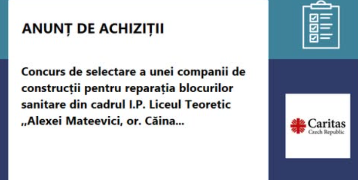
Concurs de selectare a unei companii de construcții pentru reparația blocurilor sanitare din cadrul I.P. Liceul Teoretic ,,Alexei Mateevici", or. Căinari, r-nul Căușeni
📌 Detalii: CIVIC.MD
Mai multe detalii aflați pe pagina noastră de
Facebook
ANUNȚ IMPORTANT
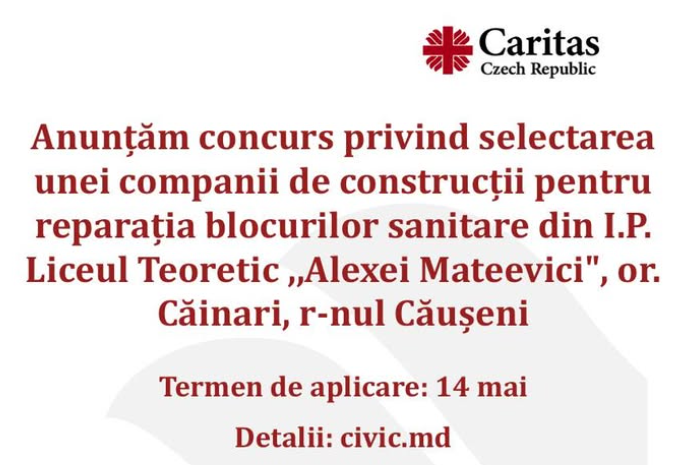
🔎Anunțăm concursul pentru selectarea unei companii de construcții în vederea executării lucrărilor de reparație a blocurilor sanitare din cadrul I.P. Liceul Teoretic ,,Alexei Mateevici", or. Căinari, r-nul Căușeni.
📆Termenul limită de aplicare: 14 mai 2026
📌 Detalii: CIVIC.MD
Mai multe detalii aflați pe pagina noastră de
Facebook
Sărbătoarea Tricolorului
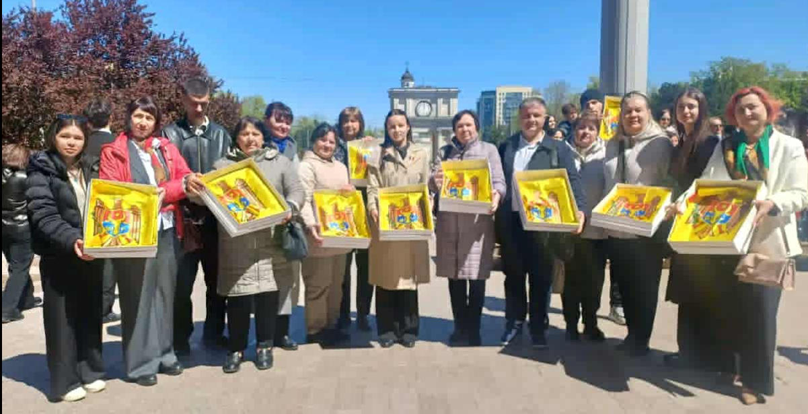
🎉 Sărbătoarea Tricolorului la IPLT „Alexei Mateevici” Căinari!
Ieri, 27 aprilie, am celebrat cu mândrie ,,Ziua Drapelului de Stat", simbolul unității și al demnității noastre.
✨ Momentul solemn din Piața Marii Adunări Naționale și-a găsit ecoul în comunitatea noastră, unde sărbătoarea a continuat cu aceeași intensitate și emoție.
Împreună, purtăm drapelul în suflet ca pe o promisiune de loialitate și dragoste față de țară!
🟦🟨🟥 Tricolorul ne unește, ne inspiră și ne dă putere!
Mai multe detalii aflați pe pagina noastră de
Facebook
Olimpiada Raională la Educație Fizică
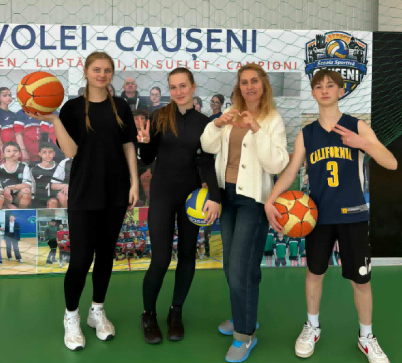
🏅 Rezultate Olimpiada Raională la Educație Fizică
✨ Elevii noștri au demonstrat talent, ambiție și spirit competitiv, obținând rezultate remarcabile la Olimpiada Raională:
🥇 Hîncu Olga – Locul I
🥇 Bumbu Adriana – Locul I
🥈 Cazacenco Dan – Locul V
👏 Felicitări tuturor pentru muncă și dăruire!
Mulțumim profesoarei de educație fizică Bumbu Nadejda pentru îndrumare și sprijin.
🌟 Succes în continuare și cât mai multe performanțe frumoase!
Mai multe detalii aflați pe pagina noastră de
Facebook
Seminar informativ
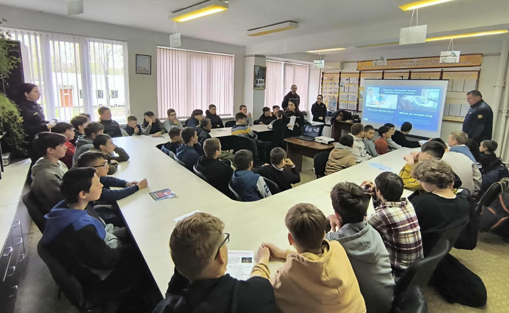
📅 La data de 22.04.2026, în incinta IPLT "ALEXEI MATEEVICI” din Căinari, raionul Căușeni, s-a desfășurat un seminar informativ cu tematica „Consumul de droguri și bullyingul”.
👩⚖️ Activitatea a fost organizată și susținută de consilierii de probațiune din cadrul Biroului de Probațiune Căușeni: Potînga Ludmila, Toderașco Dina și Tcacenko Marina, în colaborare cu 👮 Sandu Vasile – șeful sectorului Căinari și Guțu Andrei – ofițer principal al Inspectoratului de Poliţie Căuşeni.
💬 Discuțiile au fost interactive și utile, elevii fiind încurajați să conștientizeze riscurile asociate consumului de droguri și efectele negative ale bullyingului.
🤝 Împreună construim un mediu mai sigur pentru tineri!
✨ Implicarea face diferența!
Mai multe detalii aflați pe pagina noastră de
Facebook
📚🧠 Spirit de echipă și provocări intelectuale!
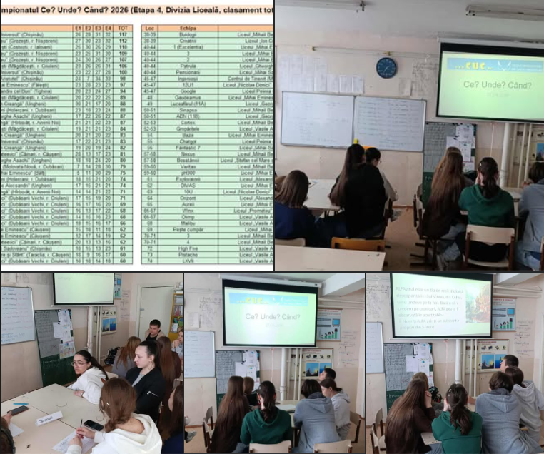
În perioada martie–aprilie 2026, elevii clasei a XI-a din Liceul Teoretic "ALEXEI MATEEVICI” Căinari s-au implicat activ în cadrul Campionatului „Ce? Unde? Când?”, organizat de Clubul Moldovenesc de Jocuri Intelectuale, în Divizia Liceală.
🏫 În cadrul activităților desfășurate în instituție, două echipe curajoase – „Camarazii” și „Echipajul X” – au acceptat provocarea de a-și testa cunoștințele, logica și rapiditatea în gândire.
🔥 Emoții, întrebări provocatoare și multă concentrare i-au însoțit pe parcursul etapelor, iar rezultatele nu au întârziat să apară:
🥇 „Camarazii” – locul 20
🎯 „Echipajul X” – locurile 32–34
👏 Ambele echipe s-au remarcat prin determinare, colaborare și dorința de a se autodepăși, demonstrând că pasiunea pentru cunoaștere aduce rezultate frumoase!
Mai multe detalii aflați pe pagina noastră de
Facebook
✨ Oportunitate pentru cadrele didactice! ✨
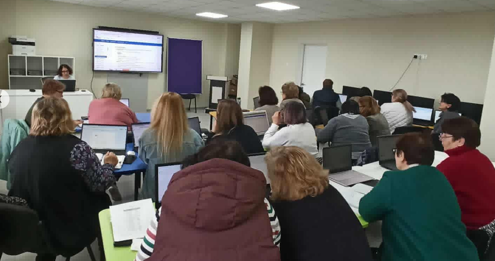
Datorită implicării în proiectul Accelerator, mentorul Iulia Baț oferă această formare valoroasă, prin care profesorii au posibilitatea de a-și dezvolta competențele digitale și de a beneficia de certificarea DigiProf A.
Această inițiativă sprijină modernizarea procesului educațional și încurajează integrarea eficientă a tehnologiei în activitatea didactică. 📚💻
Investim în profesori pentru a transforma învățarea!
Mai multe detalii aflați pe pagina noastră de
Facebook
O vizită la Biserica „Sf. Arhanghelii Mihail și Gavriil” din localitate
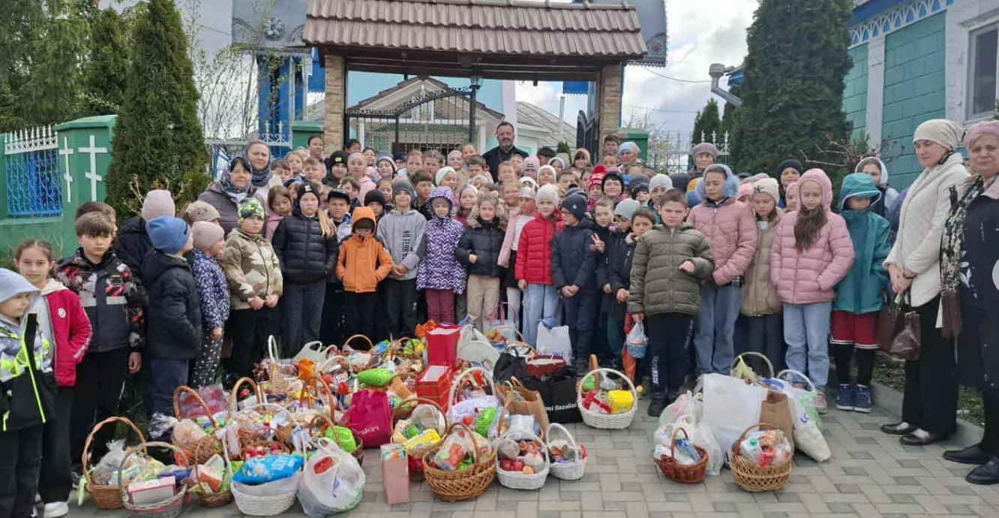
În spiritul generozității și al tradițiilor pascale, în această săptămână luminată, elevii treptei primare, ghidați de învățătoarele Volcov Galina, Barbaroș Nadejda, Timofti Natalia, Falenciuc Dina, Ghilan Elena și Budiștean Liuba, alături de elevii clasei a VIII-a, diriginte Chiriac Elvira, au marcat „Săptămâna faptelor bune” printr-o vizită la Biserica „Sf. Arhanghelii Mihail și Gavriil” din localitate.
Tot în această perioadă, în instituție s-a desfășurat activitatea transdisciplinară „Tradiții pascale și creativitate”, cu participarea elevilor claselor a IV-a A și a IV-a B, coordonați de doamnele învățătoare Ghilan Elena și Budiștean Liuba, în parteneriat cu doamna Ludmila Robu, conducător de cerc. Împreună, copiii au dat viață tradițiilor prin frumoasa activitate de încondeiere a ouălor. 🥚🎨
Continuăm tradițiile de a dărui din suflet, aducând bucurie celor aflați în nevoie. 🎁
Continuăm tradițiile recunoștinței, exprimând apreciere pentru ospitalitatea părintelui Valentin Baltag și sprijinul oferit de părinți. 🙏
Continuăm tradițiile luminii și credinței, dorindu-vă sărbători senine, pline de liniște și armonie alături de cei dragi!
Mai multe detalii aflați pe pagina noastră de
Facebook
Se aprinde candela de Paști
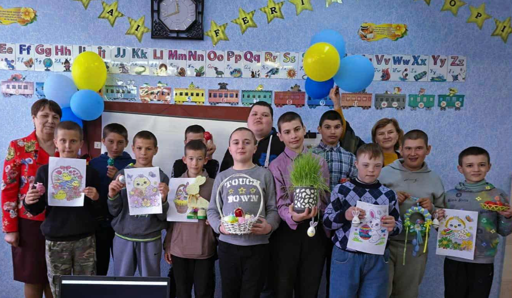
Cadrele didactice de sprijin din IPLT "ALEXEI MATEEVICI” Căinari, raionul Căușeni, au desfășurat o activitate transdisciplinară dedicată elevilor cu cerinţe educaţionale speciale. Elevii au participat la ateliere creative și discuții tematice, dezvoltându-și abilitățile și trăind bucuria sărbătorilor într-un mediu incluziv.
Sărbători luminate! ✨
Mai multe detalii aflați pe pagina noastră de
Facebook
Concurs Raional
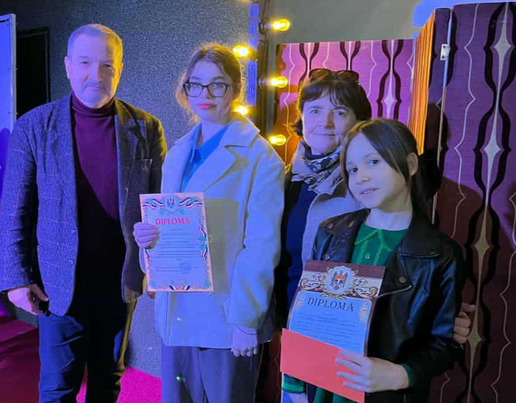
🎤📖 Concursul raional al declamatorilor, dedicat memoriei lui Grigore Grigoriu, ediția a VI-a, a demonstrat încă o dată că un bun declamator dă viață cuvintelor, transformând poezia într-o trăire care ajunge direct la sufletul publicului 💫
Prin expresivitate, intonație și sensibilitate 🎭, participantele Didenco Daniela, elevă în clasa a XI-a, și Bumbu Sofia, elevă în clasa a IV-a, au demonstrat abilități de interpretare a operei poetice a Magdei Isanos ✨📚
👏 Felicitări deosebite pentru Didenco Daniela, elevă în clasa a XI-a, care s-a clasat pe locul IV (mențiune)! 🏅🎉
Mai multe detalii aflați pe pagina noastră de
Facebook
Cros de primăvară
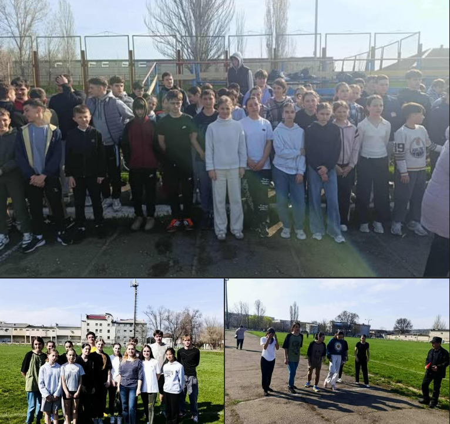
🏃♀️🏃♂️ Cros de primăvară – energie, sport și performanță! 🌿
Elevii noștri au participat cu entuziasm la competiția raională „Cros de primăvară”, demonstrând spirit sportiv, ambiție și dorință de succes. Prin fiecare pas, au arătat că mișcarea înseamnă sănătate, disciplină și încredere în propriile forțe.
📊 Rezultatele obținute:
🥇 Gorneț Nicoleta– locul I
🥇 Bacal Veronica – locul I
🥈 Treasco Gabriela – locul II
🥉 Hîncu Olga – locul III
🥉 Neculcea Cristi – locul III
🥉 Țep Nadejda – locul III
👏 Lungu Andreea – mențiune
👏 Lungu Mihaela – mențiune
👩🏫 Responsabil de elevi: profesor Bumbu Nadejda – pentru implicare, susținere și ghidare permanentă în dezvoltarea spiritului sportiv al elevilor.
Felicitări tuturor participanților pentru implicare și efort! Suntem mândri de voi! 💪
🌟 Mesaj pentru elevi: Continuați să faceți sport, să vă depășiți limitele și să alergați mereu spre succes!
Mai multe detalii aflați pe pagina noastră de
Facebook
Ziua Mondială de Conștientizare a Autismului
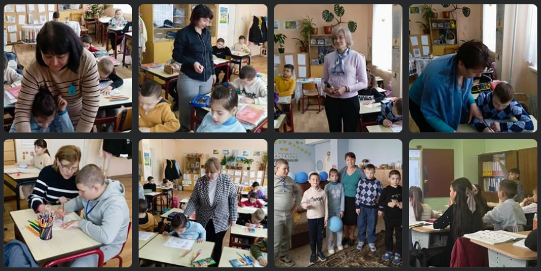
💙🌍 Ziua Mondială de Conștientizare a Autismului 💙
Astăzi marcăm Ziua Mondială de Conștientizare a Autismului, un prilej important de a promova înțelegerea, acceptarea și incluziunea persoanelor cu tulburări din spectrul autist 🤝💙
🧩 Autismul nu este o barieră, ci o formă diferită de a percepe lumea. Fiecare copil este unic și are nevoie de sprijin, răbdare și încurajare pentru a-și valorifica potențialul 🌱✨
🏫 În instituția noastră susținem diversitatea și promovăm un mediu educațional incluziv, în care fiecare elev se simte acceptat și valorizat 🤗📚
💙 Să fim mai empatici, mai deschiși și mai solidari!
Împreună putem construi o comunitate în care diferențele sunt respectate și apreciate 💫💙
Mai multe detalii aflați pe pagina noastră de
Facebook
Accelerator Digital
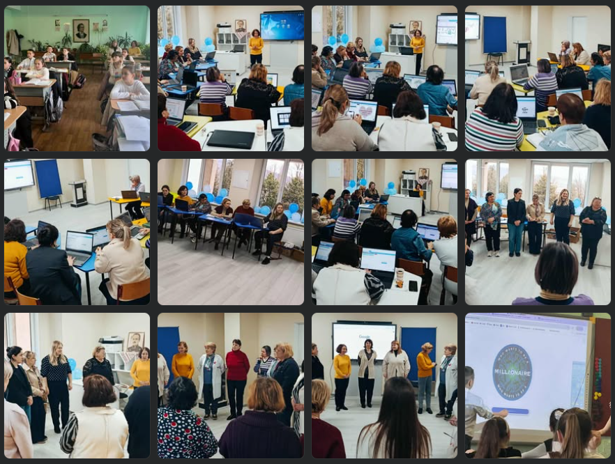
📢 ,,Acceleratorul Digital"
Instituția Publică Liceul Teoretic „Alexei Mateevici” Căinari este parte a proiectului-pilot „Accelerator Digital”, desfășurat în parteneriat cu UNICEF, în cadrul programului „Inovații digitale ale sistemului educațional din R. Moldova”, cu sprijinul Parteneriatului Global pentru Educație (GPE).
La data de 31 martie 2026, am avut onoarea de a o avea în vizită pe dna Iulia Băț, meta-mentor în cadrul programului DigiProf-C. Activitatea a inclus asistări la două lecții în care au fost utilizate tehnologii digitale, analize și discuții cu echipa instituțională, precum și un atelier practic cu cadrele didactice.
👩🏫 În cadrul sesiunii de formare, profesorii au explorat și aplicat platforme educaționale moderne precum:
🔹 WordArt – pentru organizarea vizuală și creativă a informației;
🔹 LearningApps – pentru realizarea exercițiilor interactive.
👨🏫 Cadrele didactice au participat activ, realizând sarcini practice și consolidându-și competențele digitale.
Prin implicarea în acest program, echipa noastră contribuie la:
✔️ dezvoltarea competențelor digitale;
✔️ implementarea practicilor educaționale inovatoare;
✔️ diseminarea bunelor practici în instituție.
🌱 Activitatea reprezintă un pas important în modernizarea procesului educațional și în crearea unui mediu de învățare inovativ.
🏫 Împreună construim o școală modernă, orientată spre viitor! 💻📚
Mai multe detalii aflați pe pagina noastră de
Facebook
Ziua ușilor deschise!
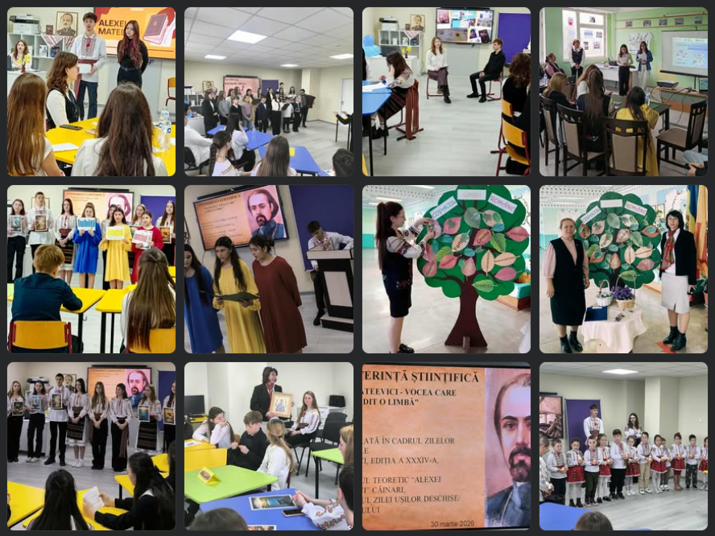
🔔 167 de ani de lumină sub spiritul lui Alexei Mateevici! 📖
Astăzi, porțile Liceului Teoretic "ALEXEI MATEEVICI” din Căinari s-au deschis larg pentru o celebrare a cunoașterii, a tradiției și a limbii române. Într-o atmosferă vibrantă, am marcat „Ziua Ușilor Deschise”, un moment de bilanț și de mândrie pentru întreaga noastră comunitate educațională.
✨ Reperele unei zile memorabile:
Omagierea Poetului-Profet: Am început ziua cu recunoștință față de patronul nostru spiritual, Alexei Mateevici, „vocea care a zidit o limbă”. Moștenirea sa continuă să inspire fiecare generație de elevi care pășește în acest lăcaș de cultură.
Excelență Academică: Agenda a fost densă și inspirațională – de la ore publice de limba română și comunicare, până la conferințe științifice ce explorează profunzimea cuvântului mateevician.
Inovație și Viitor: Consiliul elevilor ne-a demonstrat că viitorul sună bine prin lansarea proiectului PupilPoint, o dovadă clară a creativității și spiritului de inițiativă al tinerilor noștri liceeni.
Transdisciplinaritate: Activitatea „Ecoul unui clopot peste timp” a unit generațiile, amintindu-ne că suntem, înainte de toate, ctitori și păstrători ai valorilor noastre naționale.
Suntem liceeni, rămânem prin vreme,
Ani de liceu, glasul iar să ne cheme..." 🎶
Mulțumim tuturor oaspeților noștri de seamă, cadrelor didactice dedicate și, mai ales, elevilor care fac din acest liceu un loc al excelenței. Istoria începută în anul 1510 în vatra Căinarilor continuă cu succes prin voi!
📍 Liceul Teoretic "ALEXEI MATEEVICI”, Căinari
📅 30 Martie 2026
#AlexeiMateevici #Cainari #ZiuaUsilorDeschise #EducatieDeCalitate #LimbaRomana #LiceeniCuViitor #TraditieSiInovatie
Mai multe detalii aflați pe pagina noastră de
Facebook
Seminar teoretico-practic la disciplina Geografie
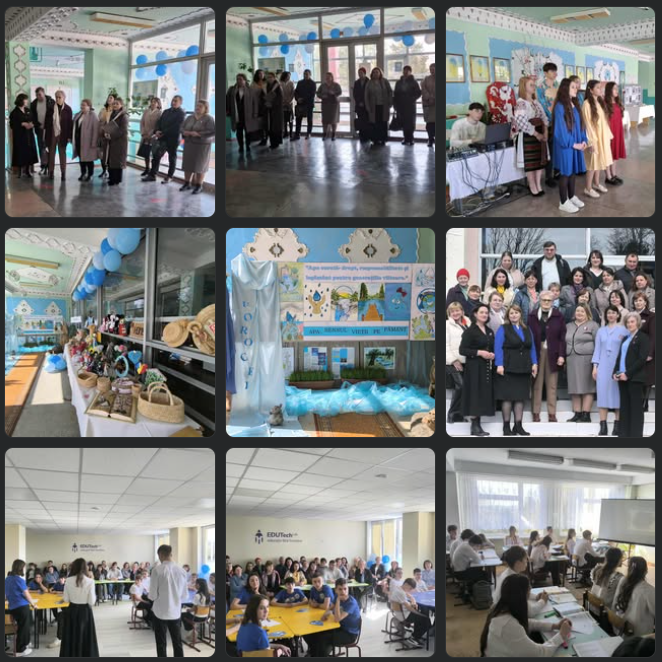
La data de 24.03.2026, în IP LT "ALEXEI MATEEVICI” Căinari s-a desfășurat seminarul teoretico-practic „Forme și metode de predare a disciplinei Geografie pentru realizarea cerințelor curriculumului și implicarea tuturor elevilor în procesul de învățare” 📚🌍
Tematica seminarului a fost: „Fiecare picătură de apă este un dar al naturii”, punând în valoare importanța educației ecologice și a responsabilității față de resursele naturale.💧
Obiectivele seminarului au vizat:
• Analiza cerințelor curriculumului la disciplina Geografie și identificarea modalităților eficiente de aplicare în procesul didactic;
• Promovarea formelor și metodelor interactive de predare-învățare, care să stimuleze participarea activă a tuturor elevilor;
• Realizarea unui schimb de experiență între profesorii de geografie privind utilizarea strategiilor didactice moderne și valorificarea bunelor practici din activitatea de clasă.
Activitatea a constituit o oportunitate valoroasă de dezvoltare profesională, colaborare și inspirație pentru cadrele didactice participante.
Mai multe detalii aflați pe pagina noastră de
Facebook
21 martie - Ziua Mondială a Sindromului Down
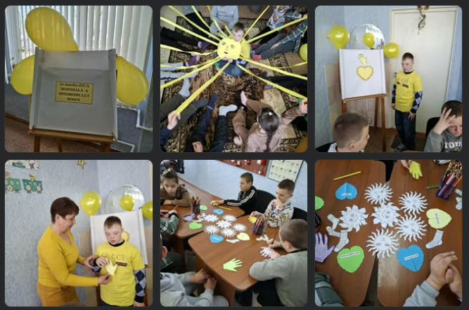
🌼 21 Martie – Ziua Mondială a Sindromului Down 🌼
În cadrul activității extracurriculare, desfășurate în incinta IP LT "ALEXEI MATEEVICI" Căinari, copiii au lucrat cot la cot, demonstrând că împreună suntem mai puternici 💛🤗
Au ținut în mâini raze de soare 🌞 – simbol al speranței, prieteniei și acceptării.
Prin gesturi simple, precum șosetele desperecheate 🧦✨, copii au transmis un mesaj important: fiecare dintre noi este unic și valoros 💙
A fost o zi plină de emoție, zâmbete sincere și suflete deschise 🌈
Împreună construim o lume mai bună 🤝
Mai multe detalii aflați pe pagina noastră de
Facebook
Înscrierea copiilor în clasa I pentru anul de studii 2026-2027
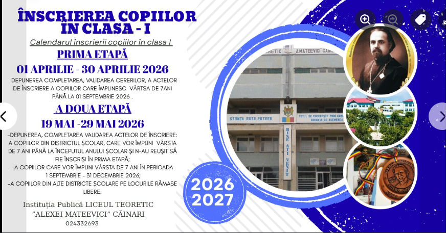
📢 Începe înscrierea copiilor în clasa I pentru anul de studii 2026–2027
Lista actelor necesare:
1. Cerere;
2. Buletinul de identitate al părintelui/ reprezentantului legal ( xerox );
3. Certificatul de naștere al copilului ( xerox );
4. Fișa medicală ( forma Nr.027/E );
5. 2 fotografii ale copilului ( mărimea 3*4 cm );
6. Raportul despre dezvoltarea copilului, (pentru copiii care au frecventat grupa pregătitoare).
Vă așteptăm cu mare drag!
Mai multe detalii aflați pe pagina noastră de
Facebook
„Zilele Mateevici”
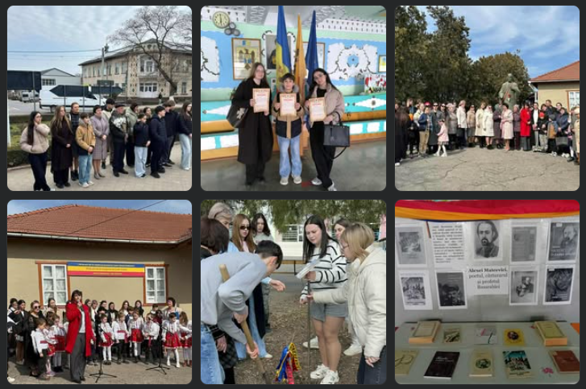
În fiecare limbă trăiește un suflet, iar în limba noastră pulsează istoria, credința și demnitatea unui neam. Astăzi deschidem „Zilele Mateevici”, un timp al memoriei și al creației, dedicat celui care a transformat cuvântul în rugăciune și limba română în simbol al demnității noastre.
Mai multe detalii aflați pe pagina noastră de
Facebook
Ședință de lucru cu părinții copiilor cu Cerințe Educaționale Speciale
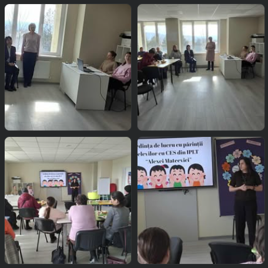
Ședință de lucru cu părinții copiilor cu Cerințe Educaționale Speciale
La data de 12.02.2026, în cadrul IPLT „Alexei Mateevici” Căinari, s-a organizat și desfășurat ședința de lucru cu părinții copiilor cu Cerințe Educaționale Speciale (CES).
Activitatea face parte din acțiunile planificate în cadrul proiectului „Împuternicirea copiilor, părinților, cadrelor didactice și comunităților pentru a promova educația incluzivă în Republica Moldova”, inițiat de UNICEF și implementat de CCF Moldova, în parteneriat cu Ministerul Educației și Cercetării și Centrul Republican de Asistență Psihopedagogică, în cadrul campaniei naționale „Învățăm împreună”, cu suportul financiar al Guvernul Marii Britanii, pentru perioada iulie 2025 – iunie 2026.
Invitată specială a fost dna Trifan Lilia, reprezentant CCF Moldova, coordonator de proiect în instituție, care a oferit informații utile și recomandări privind sprijinul acordat copiilor și colaborarea eficientă școală–familie. 🤝📚
Activitatea a reprezentat un pas important în consolidarea parteneriatului dintre școală și părinți, contribuind la crearea unui mediu educațional incluziv și prietenos pentru fiecare copil. 💙🌍
Mai multe detalii aflați pe pagina noastră de
Facebook
Întâlnirea cu absolvenții
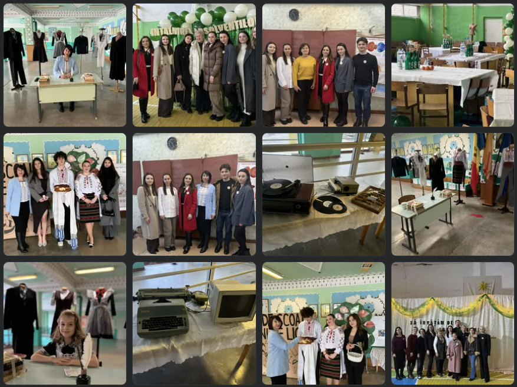
Pe data de 7 februarie 2026 📅, în incinta IPLT „Alexei Mateevici” din Căinari 🏫, s-a desfășurat tradiționala sărbătoare „Întâlnirea cu absolvenții” 🤝, un prilej de revedere emoționantă 💖 și de întoarcere, măcar pentru câteva clipe, în anii plini de visuri ai școlii. ✨📚
Foștii elevi au pășit din nou pe holurile cunoscute 🚶♀️🚶♂️, purtând în suflet amintiri vii 💭 și zâmbete sincere. 😊
Întâlnirea a fost marcată de recunoștință față de profesorii care le-au călăuzit pașii 👩🏫👨🏫, transformând evenimentul într-o punte caldă între trecut și prezent. 🌉💫
Mai multe detalii aflați pe pagina noastră de
Facebook
Comemorarea Holocaustului - lecție de istorie și responsabilitate
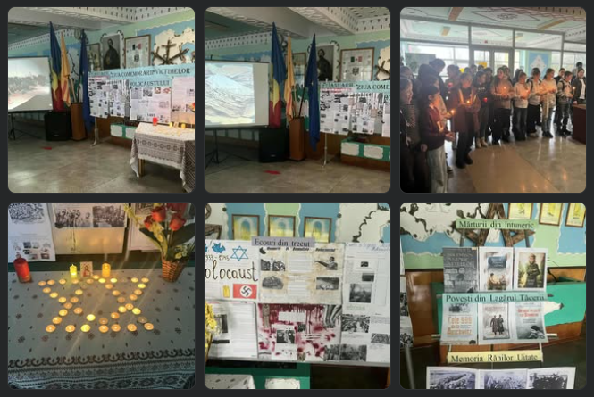
🕯 Comemorarea Holocaustului – lecție de memorie și responsabilitate 🕯
În perioada 26–30 ianuarie 2026, în cadrul IP LT „Alexei Mateevici”, Căinari, au fost desfășurate activități educaționale dedicate memoriei victimelor Holocaustului.
Activitățile au avut drept scop aprofundarea cunoștințelor elevilor despre una dintre cele mai tragice pagini ale istoriei, precum și promovarea toleranței, a respectului reciproc și a valorilor umane fundamentale.
„Istoria nu este doar despre trecut, ci despre lecțiile pe care le ducem mai departe.”
Mai multe detalii aflați pe pagina noastră de
Facebook
📚🔥 Olimpiada Școlară 2026 – Etapa Locală 🔥📚
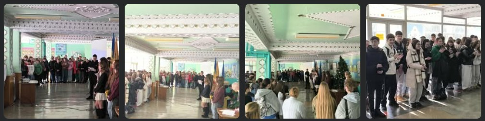
În perioada 12–19 ianuarie 2026, elevii pasionați de cunoaștere și performanță participă la Olimpiada Școlară – etapa locală, un eveniment care celebrează munca, talentul și dorința de afirmare academică. ✨
🎯 Obiectivele olimpiadei:
📌 stimularea interesului elevilor pentru diferite discipline și domenii de cunoaștere;
📌 creșterea motivației pentru învățare și dezvoltarea creativității;
📌 dezvoltarea capacităților intelectuale, a voinței și a spiritului competitiv. 💡🧠🏆
🔥 Torța cunoștințelor este purtată simbolic de elevii învingători ai olimpiadelor raionale și republicane 2025, un exemplu de perseverență și excelență pentru toți participanții. ✨
📣 Olimpiada Școlară – etapa locală 2026 este declarată DESCHISĂ!
🍀 Le dorim tuturor elevilor mult succes, inspirație și realizări frumoase!
Credeți în voi și mergeți spre performanță! 🌟📘
Sărbătorile de iarnă cu daruri și multe bucurii în IPLT „Alexei Mateevici”🎄
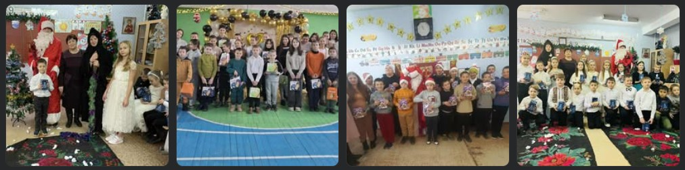
❄️✨🎄🎁Sărbătorile de iarnă cu daruri și multe bucurii în IPLT „Alexei Mateevici” au început din 20 decembrie, marcând debutul unei perioade pline de surprize, emoții frumoase și zâmbete sincere pentru copilașii din instituție. 🎄🎁✨❄️
De atunci, au urmat numeroase activități și daruri, care au adus căldură sufletească și amintiri de neuitat. 😊❄️
Aducem mulțumiri alese APL Căinari pentru sprijinul oferit și pentru cadourile de sărbători, care au adus multă bucurie copiilor din treapta primară. 🤝💝
Recunoștință agenților economici din or. Căinari — Bumbu Anatolie și Lavric Nicolae — împreună cu Şendrea Nadejda, președinte AOPP „SPERANŢA-Căinari”, pentru generozitate și implicare. Datorită acestui efort comun au fost felicitați copiii din familii vulnerabile și copiii cu nevoi speciale, aducându-le bucurie, speranță și zâmbete sincere. 🌟🤍
Mulțumim Olesea Pruteanu, care a facilitat sprijinul unei persoane anonime din diaspora, a cărei bunătate a contribuit la aceste momente speciale. 🌍✨
Vă mulțumim tuturor pentru solidaritate, discreție și inimile mari care transformă sărbătorile în momente pline de magie! 🎅✨
📖✨ Săptămâna Poeziei MOVA ✨📖
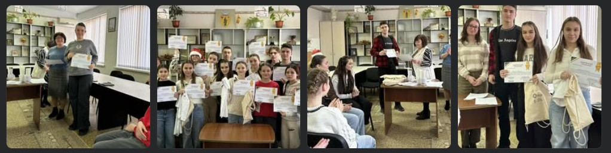
IPLT „Alexei Mateevici”, Căinari, raionul Căușeni
În cadrul Săptămânii Poeziei MOVA, elevii liceului nostru au demonstrat că poezia este o formă vie de expresie artistică și civică, plină de emoție, curaj și creativitate 💫✍️.
🎯 Obiectivul activității:
Promovarea poeziei ca formă de expresie artistică și civică în rândul elevilor de liceu.
📚 Concursul s-a desfășurat pe trei categorii tematice:
❄️ Poezie de sărbători de iarnă
❤️ Poezie de iubire
🌈 Poezie de visuri și aspirații
🙏 Mulțumim organizatorilor Grupului de Inițiativă MOVA, condus de Ohnovan Victor, precum și juriului CM „Limba și Comunicare” pentru implicare și susținere.
👏 Felicitări tuturor participanților pentru curajul de a crea și pentru originalitatea fiecărei poezii prezentate!
💐 Vă dorim inspirație, succese și împliniri literare!
🎁✨ Dar din Dar – bucurii împărtășite ✨🎄
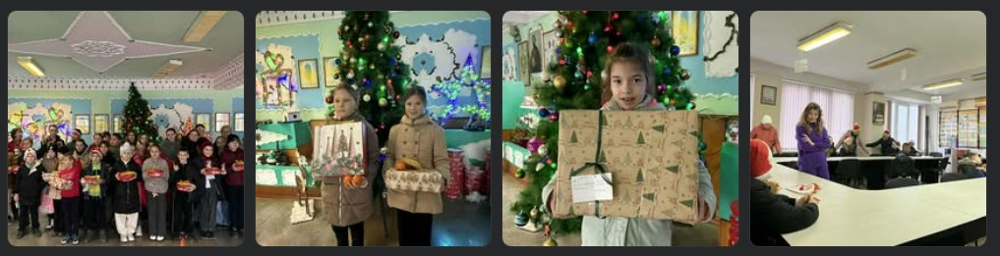
În cadrul campaniei „Dar din Dar”, organizată de InspirO, elevii din LT „Alexei Mateevici” Căinari au primit cadouri dulci – bomboane 🍬, fructe 🍎🍊 – și au pictat câte un brăduț 🎨🎄, luând acasă o amintire plină de culoare.
A fost o activitate încărcată de emoții, zâmbete și speranță 💖, aducând lumină și bucurie copiilor care au nevoie de atenție și căldură sufletească înainte de sărbătorile de iarnă ❄️✨
„Împuternicirea copiilor, părinților, cadrelor didactice și comunităților pentru a promova educația incluzivă în Republica Moldova”
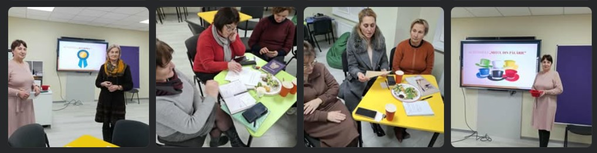
🏫 Liceul Teoretic „Alexei Mateevici” este parte a proiectului „Împuternicirea copiilor, părinților, cadrelor didactice și comunităților pentru a promova educația incluzivă în Republica Moldova”, inițiat de UNICEF și implementat de CCF Moldova, în parteneriat cu Ministerul Educației și Cercetării și Centrul Republican de Asistență Psihopedagogică, în cadrul campaniei naționale „Învățăm împreună”, cu suportul financiar al Guvernul Marii Britanii, pentru perioada iulie 2025 – iunie 2026.
📚 În cadrul proiectului, în instituția noastră au fost organizate trei ateliere de formare pentru cadrele didactice, axate pe:
🔹 educația incluzivă
🔹 andragogie
🔹 parteneriatul școală–familie–comunitate
🔹 comunicarea eficientă între profesori, părinți și alți actori ai microsistemului educațional
🌱 Impactul activităților s-a reflectat în:
✔️ creșterea nivelului de conștientizare și deschidere față de incluziune
✔️ consolidarea competențelor de comunicare ale cadrelor didactice
✔️ întărirea colaborării cu familia și comunitatea
🤗 Atelierele au facilitat schimbul de bune practici, reflecția profesională și asumarea unor abordări educaționale centrate pe copil, contribuind la crearea unui mediu școlar mai sigur, mai empatic și mai incluziv.
💙 Prin aceste rezultate, instituția noastră își reconfirmă angajamentul de a promova educația de calitate pentru toți copiii, bazată pe respect, parteneriat și responsabilitate comună.
,,Ziua Drepturilor Copilului" - 10 decembrie ,,Ziua Drepturilor Omului"
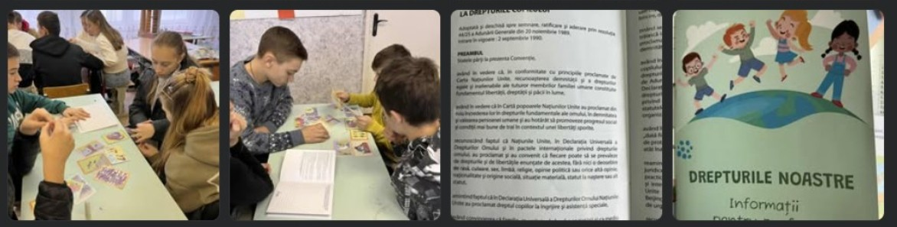
👉În perioada 20 noiembrie ,,Ziua Drepturilor Copilului" - 10 decembrie ,,Ziua Drepturilor Omului" în cadrul IP L.T. „Alexei Mateevici” Căinari s-au desfășurat activități interactive dedicate înțelegerii și promovării Drepturilor Copilului, stipulate în Convenția ONU. Elevii au participat cu interes la discuții, jocuri educative și activități menite să dezvolte spiritul civic, respectul și responsabilitatea.
✨ Cunoașterea drepturilor este primul pas spre a deveni cetățeni responsabili, capabili să se apere pe sine și pe ceilalți!
Succes remarcabil pentru Consiliul Elevilor din L.T. „Alexei Mateevici”, Căinari – UPSHIFT 2025!
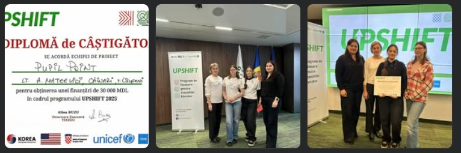
Consiliul Elevilor din cadrul Liceului Teoretic „Alexei Mateevici” din Căinari a obținut un rezultat deosebit prin câștigarea proiectului „PupilPoint” în cadrul programului UPSHIFT 2025, beneficiind de o finanțare în valoare de 30.000 de lei. Această reușită este rodul muncii asidue, al viziunii, ambiției și perseverenței elevilor implicați.
Proiectul „PupilPoint” își propune transformarea unui spațiu existent într-un centru multifuncțional modern și bine dotat, care va oferi elevilor un mediu sigur și prietenos pentru dezvoltare personală, colaborare, inițiativă și implicare activă în viața comunității școlare.
👥 Echipa de proiect:
• Alexa Budiștean
• Beatrice Cujba
• Alexandrina Prutean
👩🏫 Coordonator: Elena Ghilan , director adjunct pentru educație
🤝 Mentor: Clopot Tatiana
Echipa a demonstrat că implicarea, responsabilitatea și perseverența pot transforma o idee într-un succes real, cu impact asupra comunității școlare. Le adresăm sincere felicitări pentru acest rezultat remarcabil și le dorim mult succes în implementarea proiectului! 🌟
Totodată, exprimăm mulțumiri deosebite Administraţiei liceului și APL Căinari pentru sprijinul constant, susținerea și încrederea acordată tinerilor noștri. Acest parteneriat este esențial în promovarea inițiativelor educaționale și comunitare.
Mulțumim, de asemenea, programului UPSHIFT pentru oportunitatea oferită elevilor de a se dezvolta, de a învăța și de a transforma ideile în proiecte câștigătoare. Sprijinul, resursele și încrederea acordate tinerilor fac o diferență reală în comunitățile noastre.
👏 Felicitări, dragi elevi! Suntem mândri de voi!
Acesta este doar începutul!!!
Programul „Investim în Profesori” continuă!
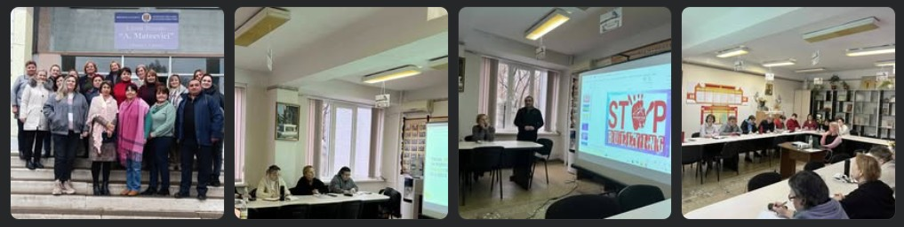
Pe perioada lunilor noiembrie și decembrie 2025, în cadrul IPLT „Alexei Mateevici”, Căinari, r-nul Căușeni, cadrele didactice au participat la activitățile de formare din cadrul programului național „Investim în Profesori” — o inițiativă de amploare dedicată dezvoltării profesionale continue a dascălilor. 👩🏫👨🏫
🎯 Obiectivul principal: îmbunătățirea competențelor profesionale ale cadrelor didactice și creșterea calității educației.
Mulțumim Ministerul Educației și Cercetării al Republicii Moldova și tuturor profesorilor pentru implicare, deschidere și dorința de a evolua continuu! 💙📖
Seminar teoretico-practic raional al profesorilor de Educație Tehnologică
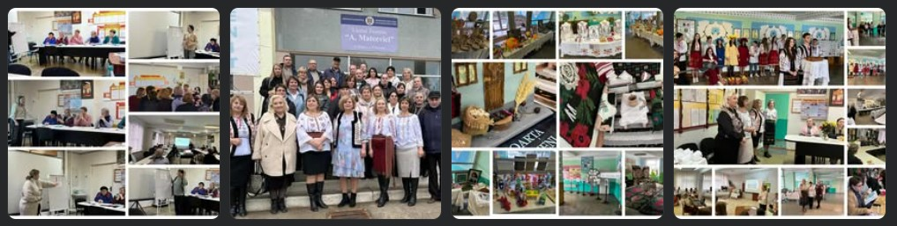
La data de 27 noiembrie 2025, în IP Liceul Teoretic ,,Alexei Mateevici" Căinari, s-a desfășurat seminarul teoretico-practic raional al profesorilor de Educație tehnologică, un eveniment de suflet dedicat valorilor naționale, creativității și colaborării 🤝🎨
🔹 Ora publică – clasa a IX-a, disciplina Educație tehnologică
📚 Lecția–proiect: „Dezvoltarea sensibilității elevilor prin prisma valorilor naționale –,,Casa Mare”
👩🏫 Profesoară: Bumbu Magdalina
🔹 Ora publică – clasa a III-a, disciplina Educație tehnologică
🎨 Tema: Realizarea colajelor și decorațiunilor tematice – ,,Moldova”
👩🏫 Învățătoare: Falenciuc Dina
🤍 Activitățile au fost îmbogățite prin colaborarea cu meșterii populari:
🧵 Sava Feodosia, Ropot Parascovia, Cioban Nadejda, care au susținut un masterclass autentic în cadrul unei frumoase șezători tradiționale 🌾
🎯 Obiectivele seminarului au vizat:
✔️ integrarea elementelor de știință, tehnologie, inginerie, artă și matematică (STEAM) pentru explorarea valorilor naționale;
✔️ exprimarea valorilor prin design, colaj, muzică și activități creative;
✔️ dezvoltarea sensibilității estetice și tehnologice prin valorificarea tradițiilor și meșteșugurilor populare;
✔️ cultivarea identității naționale prin educație și creație❤️
👏 Mulțumim tuturor cadrelor didactice, elevilor și meșterilor populari pentru implicare, dăruire și atmosfera autentică creată!
🏆 Campionatul Național de Jocuri Intelectuale „Sub cușma lui Guguță”, ediția a VIII-a – etapa raională 🎩📚
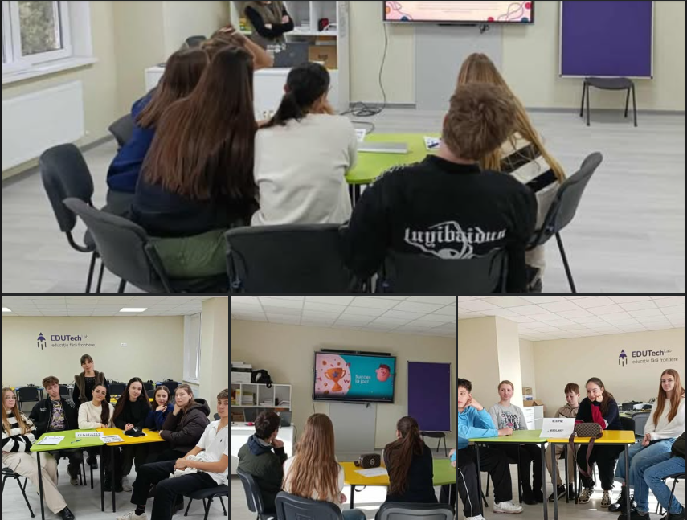
🧠 Cu mult entuziasm și spirit de competiție, elevii din ciclul gimnazial și liceal au participat la etapa raională a Campionatului Național de Jocuri Intelectuale „Sub cușma lui Guguță”.
👏 Echipa liceală „Camarazii” coordonată de profesoara de matematică, Sîrbu Rodica s-a clasat pe Locul II 🥈, iar echipa gimnazială „Mindlink” coordonată de profesoara de matematică, Spinache Elena s-a clasat pe Locul IV – rezultate frumoase care reflectă munca, perseverența și pasiunea pentru cunoaștere! 💡
🎯 Scopul acestui proiect este de a întări, prin joc, dialogul dintre elevi și profesori, dezvoltând cooperarea, gândirea critică și spiritul de echipă în cadrul activităților extracurriculare.
Felicitări tuturor participanților și profesorilor coordonatori!
🌟 Mult succes în continuare! 🍀
Seminar–training „Starea de bine în școală”
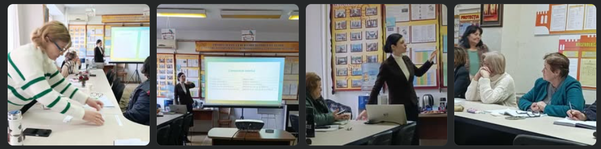
La data de 06.11.2025, cadrele didactice ale IP LT „Alexei Mateevici” Căinari au participat la un seminar-training dedicat creării unui climat pozitiv și echilibrat în școală.
🧠💬 Activitatea a fost una interactivă, cu discuții sincere, exerciții practice și momente de reflecție despre cum putem sprijini elevii, dar și pe noi înșine, pentru a construi o comunitate educațională sănătoasă și motivantă.
🤝 Atmosfera a fost deschisă, energică și plină de idei noi, care vor contribui la îmbunătățirea stării de bine în rândul tuturor membrilor comunității școlare.
🌿 Împreună creștem, învățăm și construim o școală în care fiecare se simte apreciat și înțeles.
Proiect școlar - Compost pentru viitor!
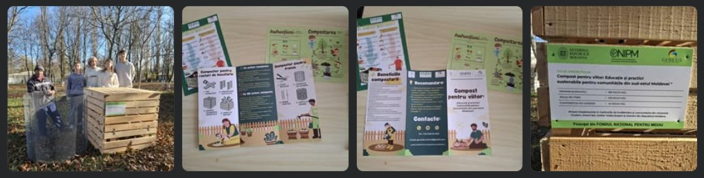
Încă o activitate frumoasă în cadrul proiectelor noastre comunitare!
Proiectul comunitar „Compost pentru viitor: Educație și practici sustenabile pentru comunitățile din sud-estul Moldovei”, prezentat de domnul Andrei Buga, coordonator de proiect, vine cu noi perspective și oportunități pentru elevii și comunitatea noastră. ♻️🌱
Urmează multă informare, implicare, experimentare și, cu siguranță, rezultate pe potriva așteptărilor!
Împreună construim un viitor mai verde! 💚🌍
Mai multe detalii aflați pe pagina noastră de
Facebook
ODD în Acțiune!
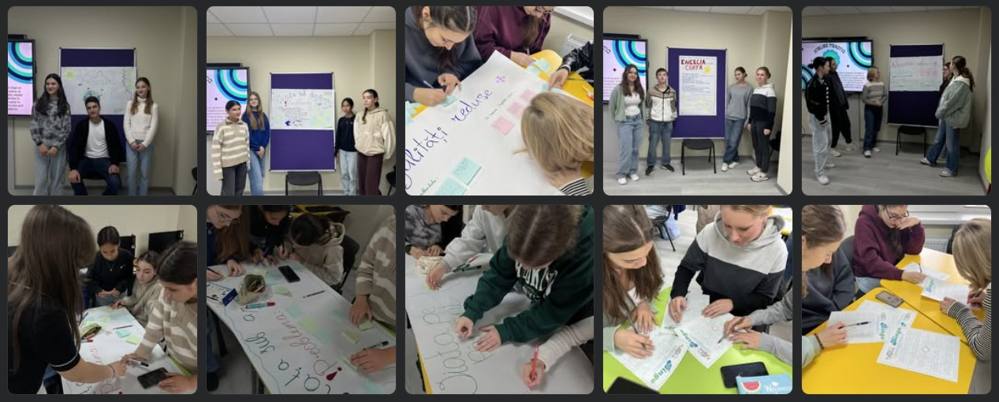
Ideile prind viață! ✨
Eleva clasei a XII-a - Treasco Mihaiela a desfășurat o activitate de follow-up intitulată „ODD în Acțiune: Laboratorul de soluții pentru comunitatea noastră”. 🔍🌍
A fost o activitate interactivă, plină de descoperiri noi despre Obiectivele de Dezvoltare Durabilă, idei creative și implicare din partea elevilor! 💡🤝🌱
Felicitări, Mihaela, pentru inițiativă și pentru energia cu care ai inspirat colegii! 🎉👏
Continuăm să construim împreună un viitor mai bun! 🌟🌿
Mai multe detalii aflați pe pagina noastră de
Facebook
La mulți ani dragi dascăli!
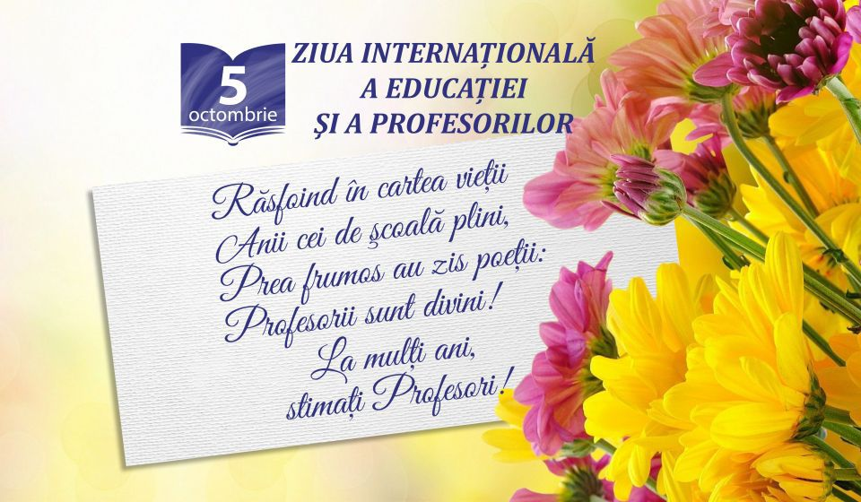
🎓 La mulți ani, dragi dascăli! 🌺
Cu ocazia Zilei profesionale a lucrătorilor din învățământ, vă adresăm cele mai alese cuvinte de recunoștință, admirație și respect!
Mulțumim pentru răbdarea, dăruirea și pasiunea cu care modelați minți, caractere și destine.🫶
Prin munca voastră, aduceți lumină acolo unde este întuneric, încurajați acolo unde există teamă și semănați speranță acolo unde pare că nu mai e.
Vă dorim sănătate, inspirație și împliniri în toate!💫
Să aveți parte de aprecieri sincere, elevi curioși și recunoscători, și de bucuria de a vedea roadele muncii voastre în fiecare zâmbet și succes al copiilor.💐
Jocul valorilor
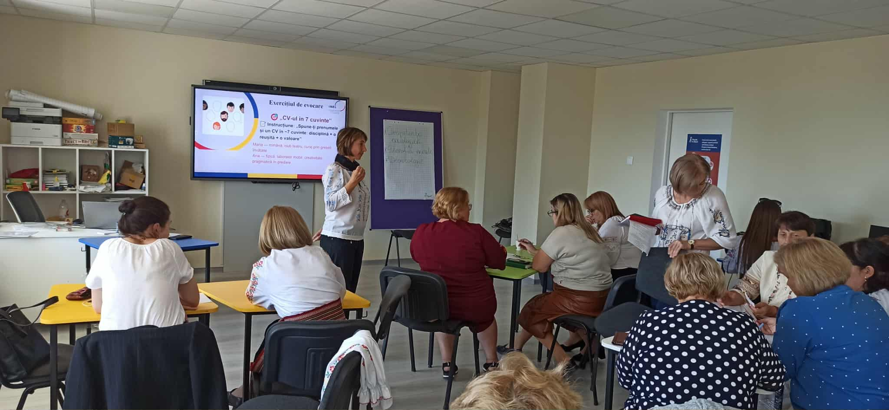
La 18 septembrie, mentorii instituționali Liuba Tim şi Ludmila Rîșcan, au organizat formarea cadrelor didactice cu tema „Educația bazată pe valori”, valorificând Jocul Valorilor ca instrument de dezvoltare a competențelor axiologice.
👉Exercițiul a sprijinit profesorii să recunoască și să analizeze valorile în situații concrete, să reflecteze asupra lor și să practice dialogul și argumentarea în contexte reale.👏
Mai multe detalii aflați pe pagina noastră de
Facebook
Proiectul MOVA în instituția noastră!
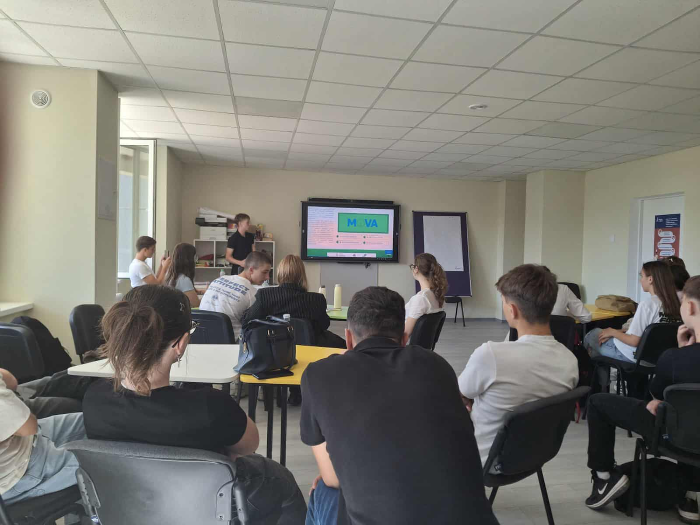
Astăzi a avut loc prima sesiune de formare organizată de ,,GDI MOVA", în cadrul proiectului ,,Budget Eye" , unde un grup de elevi au fost implicați de către fostul elev al instituției Ohnovan Victor - liderul ,,GDI MOVA".
Mai multe detalii aflați pe pagina noastră de
Facebook
Primul sunet 2025!

Stimați elevi, profesori și părinți,
Cu ocazia începutului noului an școlar și a emoționantului Primului Sunet 2025,
Direcția IPLT „Alexei Mateevici” Căinari și colectivul profesoral adresează sincere felicitări
tuturor celor care pășesc astăzi pragul școlii.
Această zi aduce cu sine speranțe, emoții și începuturi frumoase. Pentru elevii claselor I este o
călătorie plină de descoperiri, pentru absolvenți – un pas hotărâtor spre viitor, iar pentru
întreaga comunitate școlară – un prilej de a construi împreună cunoaștere, prietenie și valori
durabile.
Vă dorim tuturor un an școlar rodnic, cu rezultate frumoase, inspirație și reușite pe măsura
așteptărilor!
La mulți ani școlari!
Cu respect,
Direcția și colectivul profesoral al IPLT „Alexei Mateevici” Căinari